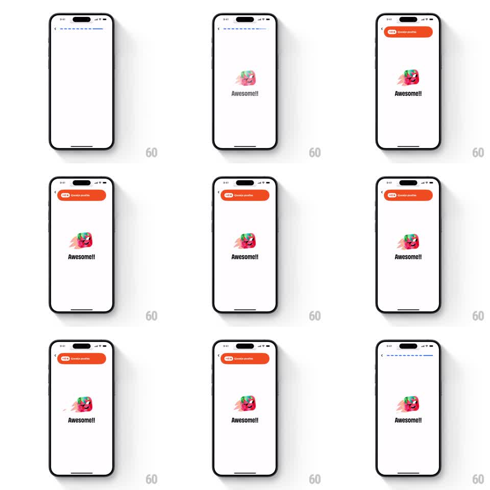

Media
Frame-by-frame

Rebuild this interaction 1:1: Numo's reward toast - an orange pill slides down from the top bezel over the lesson screen announcing XP points, holds, then retracts to reveal the dashed progress bar again.

Rebuild this interaction 1:1: Numo's reward toast - an orange pill slides down from the top bezel over the lesson screen announcing XP points, holds, then retracts to reveal the dashed progress bar again. ## Integration Integration: stack-agnostic spec - springs given as stiffness/damping, timed motions as duration + curve; map every value to your framework and animation library of choice. ## Scene Light lesson screen: back arrow, a segmented dashed progress bar across the top, center content (a colorful sticker-style star illustration, bold "Awesome!!" headline). The toast: an orange pill with a "+10 XP"-style label and subtext "Correct answer". ## Motion spec Pattern: toast drop-in / auto-dismiss, ~3s total. - Toast slides down from behind the top edge (translateY -120% -> 0, 350ms, spring ~300/20 with a slight overshoot bounce). - It overlaps and covers the progress bar region while visible. - Holds for ~2s with a subtle shadow. - Retracts upward (translateY -> -120%, 300ms, ease-in), revealing the progress bar; the bar's new segment fills in as the toast clears (300ms). - Center content never moves. ## Calibration - Entry has a small spring bounce; exit is a clean ease-in - symmetrical springs make dismissal feel hesitant. - The toast sits below the status bar, hugging the bezel like a system notification. ## Reduced motion Toast fades in/out in place (250ms) without travel. ## Don't miss - The toast covers the progress bar while visible, so the bar's fill update only shows after retract - the sequencing is the storytelling. - Exactly one toast at a time; a second reward queues, never stacks.